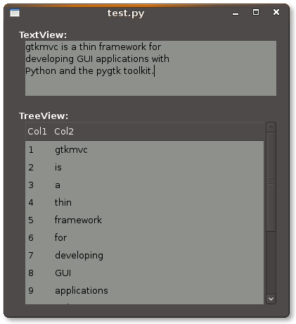

gtkmvc in 45 minutes¶
This document presents gtkmvc for those who are in hurry, or for curious people who want to have a quick overview of gtkmvc features and capabilities.
Warning
This document is not exhaustive, as many important details are not described. For a complete information refer to the User Manual and to the Tutorial, both coming along with gtkmvc.
It is assumed you already know Python, pygtk and have some experience with design issues. However, here you will find a short introduction presenting the main actors that are going to play a role into an GUI application based on gtkmvc.
Introduction¶
What is gtkmvc, and what it does¶
gtkmvc is a thin framework for developing GUI applications with Python and the pygtk toolkit.
- It helps you to organize the source code of your application.
- It provides some support for making views out of glade files.
- It separates the data/logic of your application (the model) from the presentation layer (the view).
- It tries to be as much transparent as possible wrt your application.
Some terminology¶
- Model
Contains the logic of the application, the data that are independent on the GUI. For example, in a music player:
- The list of the mp3 file names.
- The methods for playing the files in the list.
- The methods for contacting a server in the Internet for downloading some new music file.
- Observer
- It is an entity interested in observing some parts of one or more Models. Observers are used to react to certain changes in models without creating explicit dependencies or links with them.
- Observable Property
It is an attribute of the Model, that is supposed to be observable by one or more observers connected to the model. For example:
- The property current_mp3_file that is the currently played mp3 file name.
- The property current_perc holding the % of the mp3 file that is being played.
- View
Contains a set of widgets, and the methods for manipulating them. The set of widgets can be build out of a glade file. E.g:
- A method for making a bunch of widgets visible/invisible
- A method for making the view appearing in same manner under some circumstances.
- Controller
It is a particular kind of observer, connected to one model and to one or more views. It contains the GUI logic, and all handlers for GUI signals. E.g.
- A method for making the model play selected file when the play button is clicked.
- The code that makes a progress bar advance in the view as the music file is played by the model.
- Adapter
Adapts the content of one widget (or a set of widgets) into the view with one observable property into the model. An adapter keeps the content of an observable property up-to-dated with the content of a widget, and viceversa. Adapters live into the controllers. E.g.
- An adapter that bounds property current_perc with a progress bar widget into the view.
Note
All these entities are now presented more in details.
What is all this complexity for?¶
The final goal is to get your life as a designer/programmer. Designing a complex GUI is an easy task only in principle. In fact it is hard to decouple logic and presentation layers, and even harder to separate control code that should be separate. And in the end, it is easy to get spaghetti code especially in the control flow part of the GUI.
Even if gtkmvc tries to stay behind the scene, it imposes structure and barriers to the application that may be perceived as complex artifacts to beginners. However the application can grow up with a good structure that allows for clean control and data flows.
In the picture you can see how a middle/large GUI application can be organized and decomposed with gtkmvc.

Spend some time looking at this funny image. On the left, models designed as a pair of separate hierarchies. One of the model in the left hierarchy observes one model into the other hierarchy.
On the right, the presentation layer is designed as a hierarchy of three views. Each view can be based on one glade file that can be shared among views.
The model and the view sides do not see each other as they are separated by the two depicted barriers. Those barriers avoid the model to be involved in the presentation layer, and the view to be tempted to access the model part.
In the middle, the control part live. The controllers within it can see through the barriers. Controllers observe some parts of the logic into the model side, and can control some parts of the views.
- One controller controls one view (and possibly the sub-views)
- One view can be controller by one or more controllers.
- One controller control and observes one model.
- One controller can also observe many other models.
- One model can be observed by many observers.
The picture shows how a GUI can be decomposed. Keep in mind that decomposition is always intended to couple with (and hopefully reduce) complexity.
For example, you can have a controller controlling the menu and the toolbar of the application, a controller for one sub-view, two controllers for another sub-view, etc. Each controller is connected to one model, which is a part of the application logic.
Views¶
A view is a class that is intended to be a container for widgets.
import gtk
from gtkmvc import View
class MyView (View):
glade = "view_glade_file.glade"
top = "name_of_top_level_widget"
def __init__(self):
View.__init__(self)
# possible construction of manual widgets
self['name_of_new_label'] = gtk.Label("A label manually constructed!")
self['some_container_in_glade_file'].pack_start(self['name_of_new_label'])
# possible setup of all widgets
# ...
return
def set_sensitivity(self, flag):
for wid in (self[x] for x in ('widget1', 'widget2', )):
wid.set_sensitive(flag)
pass
return
pass # end of class
Your view is derived from base class gtkmvc.View that offers several services:
- Attributes glade that is used to tell the view which glade file its widgets are taken from.
- Attributes top that is used to tell which is the widget name in the glade file tree to be taken as the root widget. It is also possible to specify a list of names to pick a set of trees.
- The view instance can be used a container (a dictionary) of widgets, both for accessing named widgets in glade files, and for creating new widgets manually.
Views can be decomposed into a hierarchy of views. For example:
import gtk
from gtkmvc import View
class MySuperView (View):
glade = "view1.glade"
top = "view1_top_widget"
def __init__(self):
View.__init__(self)
self.subview = MySubView()
# connects the subview to a widget in the containing view
self['some_container'].add(self.subview.get_top_widget())
return
pass # end of class
class MySubView (View):
def __init__(self):
View.__init__(self, glade="view2.glade", top="view2_top_widget")
# setting of sub view...
return
pass # end of class
As you can see:
- It is possible to construct a hierarchy of views to deal with view composition.
- Subviews can be connected to known containers widgets into the containing view, like in the example.
- Class View provides the method get_top_widget that returns the View’s top level widget.
- Both attributes glade and top can be overridden or substituted by View’s constructor equivalent parameters.
For simple cases (views offering no services, and only based on a glade file) it is not mandatory to derive our own class:
from gtkmvc import View v = View(glade="myview.glade", top="mytop_widget)
Models¶
A model is a class that is intended to contain the application’s logic. A model contains data and methods, and a subset of the data can be declared to be observable.
from gtkmvc import Model
class MyModel (Model):
data1 = 10
data2 = "a string"
data3 = "a list of strings".split()
__observables__ = ("data1", "data3")
pass # end of class
A model must derive from gtkmvc.Model [1] which derives from Observer as models may be interested in observing themselves and other models (see Observers below).
Observable Properties are declared through the special attribute __observables__ which is a sequence of string names.
In the example class attributes data1 and data3 are declared to be observable properties. Names in __observables__ can contain wildcards [2] and all attributes in the class not beginning with a double underscore __ will be checked for matching. For example __observables__ = ("data?",) would match data1, data2 and data3.
Observable Properties¶
Observable properties live into models and can be assigned to several types of values, included lists, maps, and user defined classes. For all details about the observable properties, see the User Manual for the details.
1. Value Properties¶
Value Properties are intended to hold values which when are re-assigned observers are notified.
from gtkmvc import Model
class MyModel (Model):
data1 = 5
data2 = [1,2,3]
data3 = {}
data4 = SomeClass()
__observables__ = ("data?", )
pass # end of class
m = MyModel()
# here the properties are re-assigned
m.data1 += 15
m.data2 = [4,5,6]
m.data3 = { "key" : "value" }
m.data4 = SomeOtherClass()
Every time a value property gets reassigned, observers observing it will be notified.
2. Custom Value Properties¶
Sometimes it is needed to store values of properties outside the model, like in the File System, in a DB, or somewhere in the network via RPC. In this case it is possible to declare observable properties that do not correspond to any class attribute, but that correspond each to a pair of methods (getter/setter):
from gtkmvc import Model
class MyModel (Model):
data1 = 5
__observables__ = ("data1", "data_external")
def get_data_external_value(self):
value = # get the value somehow
return value
def set_data_external_value(self, value):
# store the value somehow...
return
pass # end of class
A getter/setter pair has to follow a naming convention, and in the example is given for the specific property data_external.
It is also possible to define one generic getter/setter pair that takes also the name of the custom property:
from gtkmvc import Model
class MyModel (Model):
data1 = 5
__observables__ = ("data1", "data2", "data3", "data4")
# this handles data3 and data4
def get__value(self, prop_name):
if prop_name == "data3": value = # get the value of data3 somehow
elif #...
return value
# this handles data3 and data4
def set__value(self, prop_name, value):
if prop_name == "data3": # store the value of data3 somehow
elif #...
return
def get_data2_value(self):
value = # get the value somehow
return value
def set_data2_value(self, value):
# store the value somehow...
return
pass # end of class
Note
Specific getter/setter pair shadows the generic pair for the property they handle. In the example, get__value and set__value` will be never called for property data2.
Note
You can exploit custom properties values to perform some custom actions when a property is read or written.
3. Mutable containers¶
When the value of an observable property is a mutable object, like a sequence or a map, observers may be interested in being notified when a method is called on the object itself:
# here the object contents are changed:
m.data2.append(7)
m.data3['key2'] = "value for key2"
4. Mutable class instances¶
Properties can be instances of mutable classes. Like for containers objects, observers may be interested in being notified when a method changing the object is called:
# here the object contents are changed:
m.data4.some_method_changing_the_instance()
Of course it is needed to declare method SomeOtherClass.some_method_changing_the_instance to be observable. For example:
from gtkmvc.model import Model, observable
class SomeOtherClass (observable.Observable):
"""This is a class that is thought to be integrated into the
observer pattern. It is declared to be 'observable' and the
methods which we are interested in monitoring are decorated
accordingly"""
val = 0
@observable.observed # this way the method is declared as 'observed'
def change(self): self.val += 1
pass #end of class
Observable properties derive from class Observable and methods that change the content of the instance can be declared by using the observed decorator like in the example.
Ok, but what if my class is already existing? It is less natural, but gtkmvc supports observable properties of already existing classes’ instances:
from gtkmvc import Model, Observer
class ExistingClass (object):
"""This is an already existing class whose code is not intended to
be changed. Instead, when instantiated into the model, it is
declared in a particular manner, so that the model can recognise
it and wrap it in order to monitor it"""
val = 0
def change(self): self.val += 1
pass #end of class
class MyModel (Model):
obj = (ExistingClass, ExistingClass(), ('change',))
__observables__ = ["obj"]
pass # end of class
The triplet must contain the name of the class, the instance, and a list naming the methods whose calls can be observed by observers.
5. Signals¶
Sometimes the models want to communicate to observers that events occurred. For this Signal can be used as property value:
from gtkmvc import Model, observable
class MyModel (Model):
sgn = observable.Signal()
__observables__ = ("sgn",)
pass
m = MyModel()
m.sgn.emit()
m.sgn.emit("A value can also be passed here")
Observers¶
An observer is a class that is interested in being notified when some observable properties into one or models it observes gets changed.
Methods in the observer that are intended to receive notifications can be defined through:
- An implicit naming convention for single properties.
- An explicit declaration that exploits decorators, for single and multiple properties.
Depending on the type of the observable property, you can see three different types of notifications:
- Value change notifications (for value assignments)
- Method calls (for containers and class instances)
- Signal emitting (for signals)
In the example you find value, before call, after call and signal notifications, presented in both flavours explicit and implicit:
from gtkmvc import observer
class MyObserver (observer.Observer):
# ------------------------------------------------------
# Value change
# ------------------------------------------------------
@observer.observes("data1", "data2")
def my_observing_value_method(self, model, prop_name, old, new):
print "Explicit value observer:", prop_name, old, new
def property_data1_value_change(self, model, old, new):
print "Implicit value observer for data1:", old, new
return
# ------------------------------------------------------
# Before method call
# ------------------------------------------------------
@observer.observes("data3",)
def my_observing_before_call_method(self, model, prop_name, instance, name, args, kwargs):
print "Explicit before call observer:", prop_name, instance, name
return
def property_data3_before_change(self, model, instance, name, args, kwargs):
print "Implicit data3 before call observer", instance, name
return
# ------------------------------------------------------
# After method call
# ------------------------------------------------------
@observer.observes("data3",)
def my_observing_after_call_method(self, model, prop_name, instance, name, res, args, kwargs):
print "Explicit after call observer:", prop_name, instance, name, res
return
def property_data3_after_change(self, model, instance, name, res, args, kwargs):
print "Implicit data3 after call observer", instance, name, res
return
# ------------------------------------------------------
# Signal emitted
# ------------------------------------------------------
@observer.observes("sgn",)
def property_sgn_signal_emit(self, model, signal_name, arg):
print "Explicit signal observer", signal_name, arg
return
def property_sgn_signal_emit(self, model, arg):
print "Implicit signal observer of sgn", arg
return
pass # end of class
Note
You may use explicit observing methods for processing multiple properties notifications at once, and implicit observing methods for single properties. However, there is no a strict rule for using either one or the other.
Here is how the model and our observer can be connected/unconnected:
m = MyModel()
o = MyObserver()
o.observe_model(m)
# ...
o.relieve_model(m)
Observer constructor optionally takes a model that it registers into:
m = MyModel()
o = MyObserver(m)
# ...
o.relieve_model(m)
Now let’s try to modify the assigned value to a property:
from gtkmvc import Model
class MyModel (Model):
data1 = 10
data2 = "a string"
data3 = "gtkmvc makes your life easier".split()
__observables__ = ("data?", )
pass # end of class
m = MyModel()
o = MyObserver(m)
m.data1 += 1
print ">>> Here m.data is", m.data1
m.data2 = "Another string"
m.data3.append("and fun")
m.data3[0] = "music"
The execution of this example produces the following output:
Implicit value observer for data1: 10 11 Explicit value observer: data1 10 11 >>> Here m.data is 11 Explicit value observer: data2 a string Another string Implicit data3 before call observer ['gtkmvc', 'makes', 'your', 'life', 'easier'] append Explicit before call observer: data3 ['gtkmvc', 'makes', 'your', 'life', 'easier'] append Implicit data3 after call observer ['gtkmvc', 'makes', 'your', 'life', 'easier', 'and fun'] append None Explicit after call observer: data3 ['gtkmvc', 'makes', 'your', 'life', 'easier', 'and fun'] append None Implicit data3 before call observer ['gtkmvc', 'makes', 'your', 'life', 'easier', 'and fun'] __setitem__ Explicit before call observer: data3 ['gtkmvc', 'makes', 'your', 'life', 'easier', 'and fun'] __setitem__ Implicit data3 after call observer ['music', 'makes', 'your', 'life', 'easier', 'and fun'] __setitem__ None Explicit after call observer: data3 ['music', 'makes', 'your', 'life', 'easier', 'and fun'] __setitem__ None
Of course an observer is not limited to observe one model:
m1 = MyModel()
o = MyObserver(m1) # o observes m1
m2 = AnotherModel()
o.observe_model(m2) # o observes also m2 now
It is usual to see models observing other models, like siblings or sub-models in model hierarchies. For this reason class Model derives from class Observer:
m3 = AnotherModel()
m3.observe_model(m2) # m3 observes m2
Controllers¶
Controllers are the most complex structures that are intended to:
- Contain the GUI logic.
- Connect one model and one or more views, without making them know.
- Observe the model they are connected to.
- Provide handlers for gtk signals (declared in the views connected to it)
- Setting up widgets that depend on the model. For example setting up of gtk.TreeView whose gtk.TreeModel lives within the model (see TreeViews and relatives)
- Setting up Adapters
This is the typical structure of a controller:
from gtkmvc import Controller
class MyController (Controller):
def __init__(self, model, view):
Controller.__init__(self, model, view)
# From here on the connected model and view are accessible
# through fields 'self.model' and 'self.view' respectively.
# setup internal fields...
# setup sub-controllers...
return
def register_view(self, view):
# initializes the view if needed
# setup widgets that need a model, like TreeView (see next section)...
# setup widgets not specified in glade, like TreeViewColumn...
# connect additional signals (e.g. for manually constructed widgets...
return
def register_adapters(self):
# setup all adapters (see Adapters below)
return
# ------------------------------------------------------------
# GTK Signal handlers
# ------------------------------------------------------------
def on_button_clicked(self, button):
# ...
return
# ...
# ------------------------------------------------------------
# Notifications of observable properties
# ------------------------------------------------------------
def property_prop_name_value_change(self, model, old, new):
#...
return
pass # end of class
As you see, a controller does a lot of work, and tends to blow-up in size. For this reason it is important to split big controllers into sub-controllers. Ina typical configuration, the application model is split into sub-modules, say m1, m2 and m3. The application controller is split into several sub-controllers, and there are sub controllers c1, c2 and c3 respectively controlling just m1, m2 and m3.
# file model.py
from gtkmvc import Model
class ApplModel (Model):
# observable properties...
def __init__(self):
Model.__init__(self)
# sub-models:
self.m1 = MyModel1(self)
self.m2 = MyModel2(self)
self.m3 = MyModel3(self)
# say you want to observe what happens within m3
self.observe_model(m3)
return
# ...
pass # end of class
Here only class MyModel1 is reported:
# file model.py
class MyModel1 (Model):
# observable properties...
def __init__(self, appl):
Model.__init__(self)
self.appl_model = appl
#...
return
pass
The controllers have a similar structure:
# file ctrl.py
from gtkmvc import Controller
class ApplCtrl (Controller):
def __init__(self, appl_model, appl_view):
Controller.__init__(self, appl_model, appl_view)
# sub-controllers
# appl_view is shared among application and c1 controllers
self.c1 = MyCtrl1(appl_model.m1, appl_view)
# c2 controls subview v2
self.c2 = MyCtrl(appl_model.m2, appl_view.v2)
#...
return
pass
TreeViews and relatives¶
gtk makes a limited use of the MVC pattern for some widgets. Those are the TextView, the TreeView and all those widgets that are based on the TreeModel class.
How does gtkmvc click on this architecture?
- Widgets like TreeView, TextView, etc. live into the view side.
- Model side of those widgets like TextBuffer, ListStore, etc. have to live into the model.
- The controller is responsible for connecting the view parts with the model parts.
The view is based on the glade file shown here:

This is the full code for this example:
import gtk
from gtkmvc import View
class MyView(View):
glade = "mvc.glade"
pass # end of class
from gtkmvc import Model
class MyModel (Model):
# ...
text_buf = gtk.TextBuffer()
list_store = gtk.ListStore(int, str)
# ...
def __init__(self):
Model.__init__(self)
text = """gtkmvc is a thin framework for
developing GUI applications with
Python and the pygtk toolkit."""
# fills in some data
self.text_buf.set_text(text)
for n, word in enumerate(text.split()):
self.list_store.append([n+1,word])
pass
return
pass # end of class
from gtkmvc import Controller
class MyCtrl (Controller):
# ...
def register_view(self, view):
text_view = view['textview']
# connects the buffer and the text view
text_view.set_buffer(self.model.text_buf)
# connects the treeview to the liststore
tv = view['treeview']
tv.set_model(self.model.list_store)
# creates the columns of the treeview
rend = gtk.CellRendererText()
col = gtk.TreeViewColumn('Col1', rend, text=0)
tv.append_column(col)
rend = gtk.CellRendererText()
col = gtk.TreeViewColumn('Col2', rend, text=1)
tv.append_column(col)
return
pass # end of class
# running triplet
m = MyModel()
v = MyView()
c = MyCtrl(m,v)
gtk.main()
When executed, this is what pops up:
Adapters¶
Adapters adapt widgets in the view and attributes (possibly observable) in the model.
Basically they automatically connect some signal of widgets to align shown data to data stored into the model.
Class Controller offers method register_adapters that is the ideal place when setting up adapters.
from gtkmvc import View
class MyView (View):
glade = "example.glade"
pass # end of class
Glade file example.glade is shown here in glade-3.

There are four widgets we want to keep aligned to the corresponding values stored into the model.
from gtkmvc import Model
class MyModel (Model):
data1 = "Some descriptive message"
data2 = "Some textual data"
data3 = 10
data4 = True # a flag
__observables__ = ("data?",)
pass # end of class
Now to connect the view and the model, we need a controller. Here an adapter is built to adapt label label_data1 to the observable property data1.
from gtkmvc import Controller
from gtkmvc.adapters import Adapter
import gtk
class MyCtrl (Controller):
def register_view(self, view):
# we connect manually as the glade file does not contain this signal handler
view['window1'].connect('destroy', gtk.mainquit)
return
def register_adapters(self):
ad = Adapter(self.model, "data1")
ad.connect_widget(self.view["label_data1"],
setter=lambda w,v: w.set_markup("<big><b>%s</b></big>" % v))
self.adapt(ad)
return
pass # end of class
Optional parameter setter is called when it is time to write the value into the given widget. Here it used to markup the text.
Note
There are similar parameters for getting, setting and error handling that can be called both when getting/setting the value from/to the model and the widget. Adapters are complex entities that can be further developed, see the User Manual for a complete description.
Finally, we need only to create a MVC triplet and run gtk:
m = MyModel()
v = MyView()
c = MyCtrl(m,v)
gtk.main()
Here you see the result.

Method Controller.adapt is polymorphic, offering several variants. One can be exploited for basic tasks like dry connection of a widget and a corresponding property in the model.
In the example we connect all the widgets very easily:
from gtkmvc import Controller
import gtk
class MyCtrl (Controller):
def register_view(self, view):
# we connect manually as the glade file does not contain this signal handler
view['window1'].connect('destroy', gtk.mainquit)
return
def register_adapters(self):
for name in ("data1", "data2", "data3", "data4"): self.adapt(name)
return
pass # end of class
Very compact isn’t it? Here you see the result of this magic, where the widgets’ content reflect the initial values of the observable properties they are attached to.

What is really interesting is that if you change the value of a widget (say, you change the text in the text entry, or in the spinbutton), also the value of the corresponding property in the model gets changed, and viceversa if the properties are also observable.
Where do you go now?¶
Good reading so far? If you are interested, you can download and install gtkmvc, see the examples provided along with it, read the User Manual, read the Tutorial, subscribe to the project mailing list, send feedback to the user, and - most of all - start using it!
Footnotes
| [1] | Or any class derived from gtkmvc.Model, see the User Manual |
| [2] | See Python module fnmatch for information about accepted wildcards |